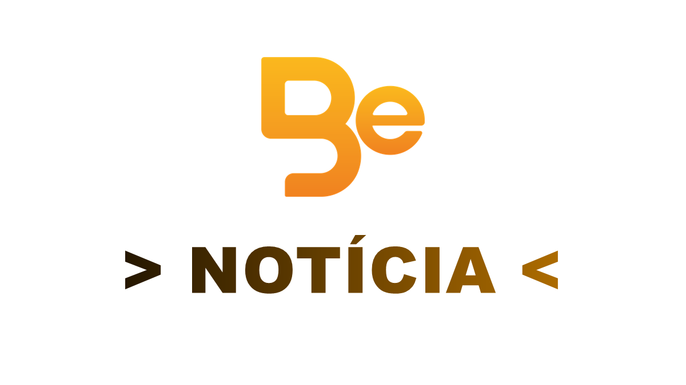

Bem Esportivo
Bem Esportivo
Timão x Verdão

Corinthians e Palmeiras empataram em um clássico de alta tensão, daqueles em que o placar não conta sozinho a história do jogo. A partida terminou sem vencedor, mas deixou muitos elementos para análise: controle territorial, capacidade de defesa, tomada de decisão sob pressão e a dificuldade de transformar superioridade numérica em gol.
O Palmeiras passou mais tempo com a bola e tentou empurrar o adversário para perto da própria área. A equipe circulou a posse pelos lados, buscou inversões e procurou acelerar quando encontrou espaço entre lateral e zagueiro. Mesmo assim, faltou uma jogada mais limpa no último terço.
O Corinthians precisou competir em outro registro. Depois de perder um jogador ainda no primeiro tempo, o time reduziu riscos, encurtou os espaços por dentro e aceitou jogar mais tempo sem a bola. A proposta foi simples, mas exigiu concentração alta: proteger a entrada da área, impedir infiltrações e tentar respirar em contra-ataques ou bolas paradas.
O empate também mostra um dado importante sobre clássicos: a leitura emocional pesa quase tanto quanto a leitura tática. Em jogos desse tamanho, qualquer erro vira notícia, qualquer disputa ganha carga extra e qualquer decisão do árbitro muda o clima da arquibancada.
O que o resultado indica
Para o Palmeiras, fica a cobrança por transformar domínio em eficiência. A equipe teve cenário favorável, ocupou o campo de ataque e jogou com um atleta a mais durante parte relevante da partida. Ainda assim, não conseguiu desmontar a última linha rival com frequência suficiente.
Para o Corinthians, o ponto conquistado tem valor pelo contexto. O time precisou sobreviver a uma partida desconfortável, com desgaste físico e emocional acima da média. A defesa respondeu bem, o goleiro apareceu quando necessário e a equipe mostrou capacidade de competir mesmo sem controlar a bola.
Personagem tático
O setor mais importante do clássico foi a faixa central defensiva do Corinthians. Volantes e zagueiros trabalharam próximos, diminuindo o espaço para finalizações frontais. O Palmeiras tentou atrair a marcação para um lado e virar rápido para o outro, mas encontrou pouca liberdade para receber de frente.
Esse desenho ajuda a explicar por que o jogo teve intensidade sem necessariamente entregar muitas oportunidades limpas. O Palmeiras atacou mais, mas nem sempre atacou melhor. O Corinthians defendeu muito, mas não apenas por recuo: houve organização, cobertura e leitura de zona.
Leitura Bem Esportivo
O clássico deixa uma conclusão equilibrada. O Palmeiras saiu com a sensação de ter perdido dois pontos pela vantagem criada durante o jogo. O Corinthians saiu com a sensação de ter sustentado um resultado difícil em uma tarde de pressão. Para o torcedor, ficou um jogo mais tático do que plástico, mais disputado do que aberto, mais de detalhes do que de grandes lances.
Em uma competição de pontos corridos, empates assim podem ter leituras diferentes ao longo da temporada. No momento, o resultado preserva a rivalidade em alta e reforça que clássicos seguem tendo vida própria: tabela, fase e favoritismo entram em campo, mas não mandam sozinhos no jogo.
Corinthians e Palmeiras ficam no empate em clássico tenso pelo Brasileirão O clássico entre Corinthians e Palmeiras terminou empatado em 0 a 0, em partida válida pelo Campeonato Brasileiro 2026, disputada na Neo Química Arena. Apesar da ausência de gols, o jogo foi marcado por muita intensidade e equilíbrio. O Palmeiras teve maior posse de bola (cerca de 68%) e finalizou mais vezes, enquanto o Corinthians apostou em uma postura mais defensiva e em contra-ataques. Um dos momentos mais decisivos da partida aconteceu ainda no primeiro tempo, quando um jogador do Corinthians foi expulso após uma atitude considerada antidesportiva, deixando o time com um a menos e dificultando ainda mais a criação ofensiva. Mesmo com a vantagem numérica, o Palmeiras encontrou dificuldades para furar a defesa corintiana, que se manteve organizada e contou com boas intervenções do goleiro para segurar o empate. Após o apito final, o clima seguiu quente fora de campo, com relatos de confusão envolvendo membros das equipes nos bastidores do estádio, refletindo a tensão do clássico.